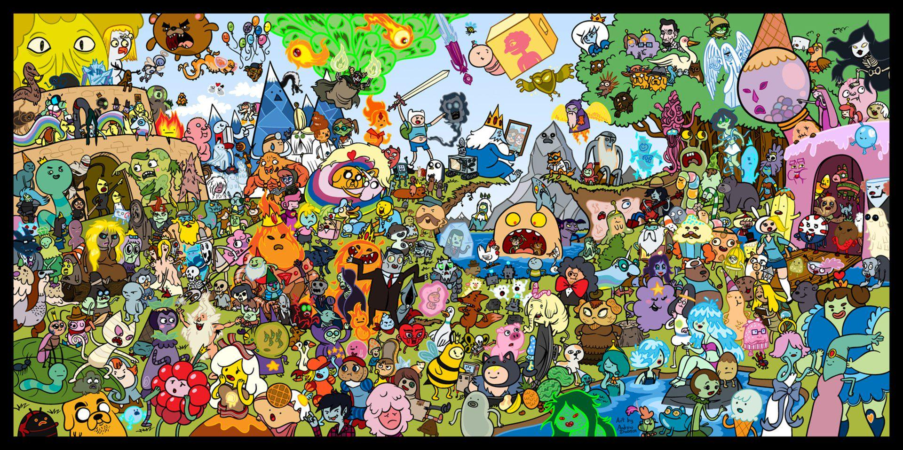

Hora de Aventura
"Hora de Aventura" sigue las surrealistas y cómicas aventuras de Finn, un niño humano, y su mejor amigo y hermano adoptivo Jake, un perro con poderes mágicos que le permiten cambiar de forma y tamaño a voluntad. Viven en la post-apocalíptica Tierra de Ooo, un lugar lleno de personajes bizarros y reinos fantásticos.

Personajes Importantes
Además de Finn y Jake, la Tierra de Ooo está habitada por una gran variedad de personajes memorables como la Dulce Princesa, la científica y gobernante del Dulce Reino; Marceline, la reina de los vampiros con más de mil años de edad; y el Rey Helado, el trágico y a menudo antagonista gobernante del Reino Helado.
¿Por qué ver la serie?
- Narrativa profunda: Detrás de su humor absurdo, esconde una trama compleja y emotiva sobre la amistad, el crecimiento y la pérdida.
- Creatividad sin límites: El diseño de personajes y mundos es único y visualmente impactante.
- Música memorable: La serie cuenta con canciones originales que se han vuelto icónicas para los fans.
- Para todas las edades: Aunque parece una serie infantil, aborda temas maduros que pueden ser disfrutados por un público adulto.